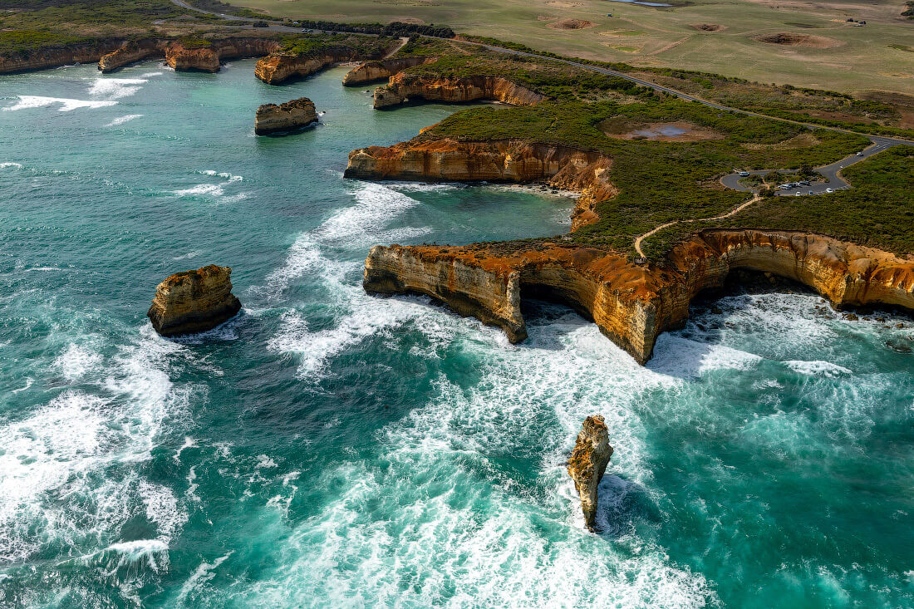
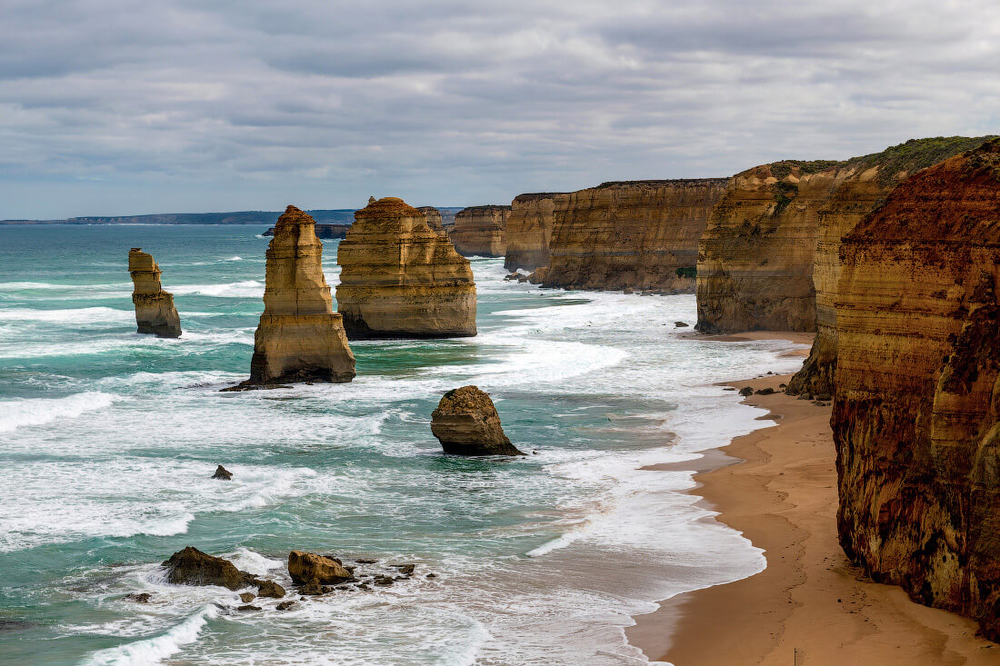
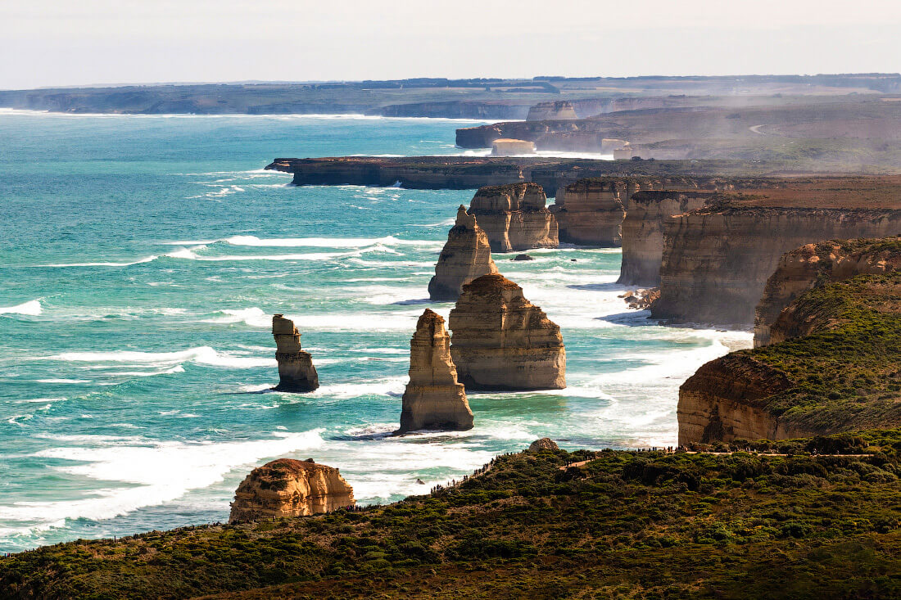
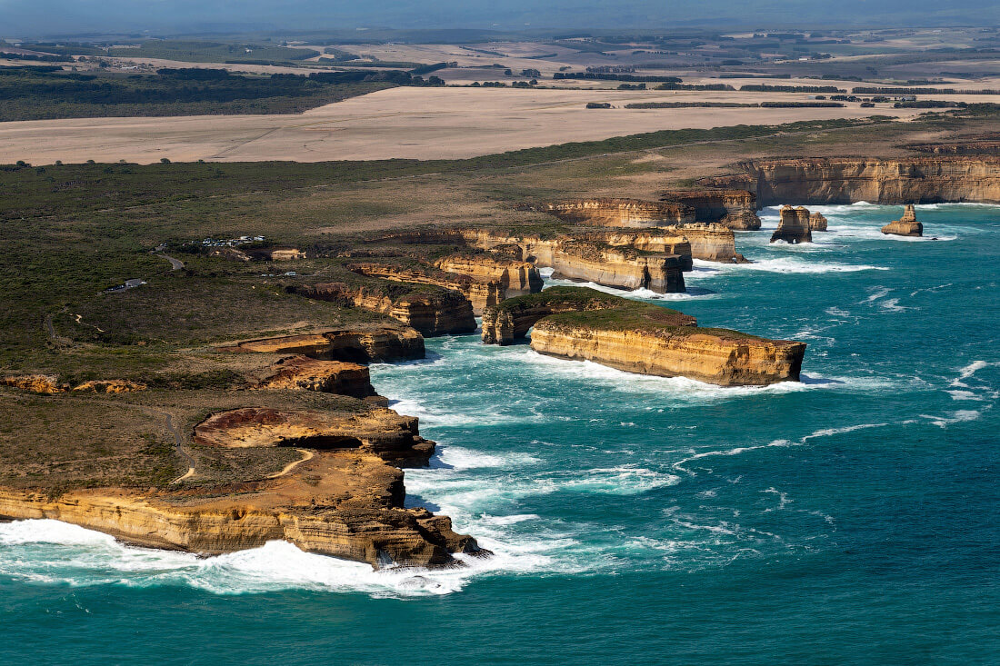
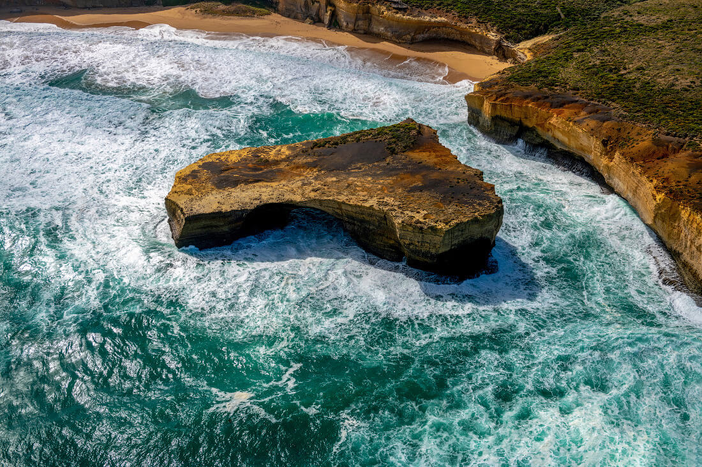
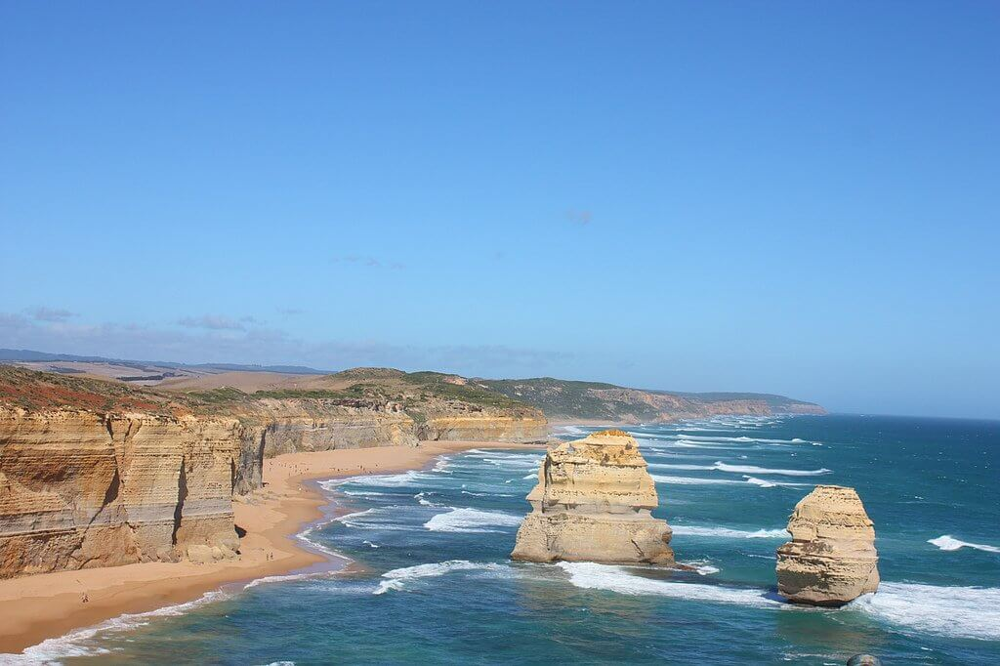
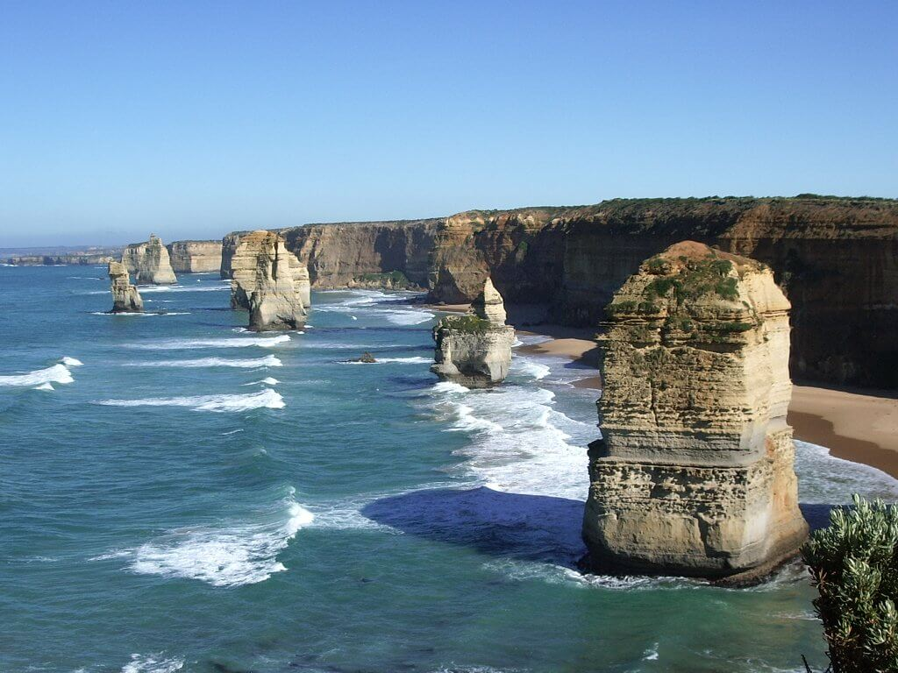

Двенадцать апостолов — это огромные известняковые скалы, лежащие на побережье Южного Океана. Они расположены на небольшом расстоянии друг от друга, создавая живописный ансамбль, который является одной из самых популярных туристических достопримечательностей Австралии.

Скалы Двенадцать апостолов (The Twelve Apostles) находятся в национальном парке Порт-Кэмпбелл, который расположен на так называемой Великой океанской дороге (Great Ocean Road) , в 250 км. от Мельбурна.
На протяжении тысячелетий вода, ветер и солнце подтачивали прибрежные известняковые массивы, выделяя из них гигантские останцы, которые сегодня поражают наше воображение. Высота некоторых из скал достигает 45 метров.

Изначально эта местность Австралии называлась «Свинья и поросята», однако власти сочли такое название не привлекательным и в 1922 году переименовали в «Двенадцать апостолов», хотя на самом деле каменных скал на том момент было всего девять. Их расчет оправдался, и теперь сюда приезжает большое количество туристов. В 2005 году силы природы обрушили одного из «апостолов» и теперь их осталось восемь. Такое разрушение удалось увидеть нескольким десяткам туристов. Буквально за пару секунд одна из скал превратилась в груду камней.

Не смотря на свою красоту скалы Двенадцать апостолов имеют и дурную славу. Здесь затонуло свыше 700 кораблей, а точное количество погибших так и не удалось подсчитать.
Некоторые места кораблекрушений считаются историческими памятниками, они отмечены специальными знаками вдоль трассы.

Лондонская арка (London Arch) — другая скальная достопримечательность национального парка Порт-Кэмпбелл.
Скальное образование возрастом в несколько миллионов лет, подвергаемое постоянному воздействию океанских волн, постепенно приняло вид двухпролётного моста. Поскольку налицо было заметное сходство с известным Лондонским мостом, это каменное образование получило то же имя.
15 января 1990 года пролёт, находившийся ближе к берегу, обрушился. Двое туристов, находившихся в этот момент на дальней части «моста», оказались в ловушке и вскоре были спасены с помощью вертолёта, никто не пострадал. После обрушения «Лондонский мост» превратился в «Лондонскую арку».

Из-за размывающих скалы волн на этом побережье в будущем может появиться еще больше «апостолов».

Скорость эрозии у основания известняковых колонн составляет где-то 2 см в год.

ВВЕРХ